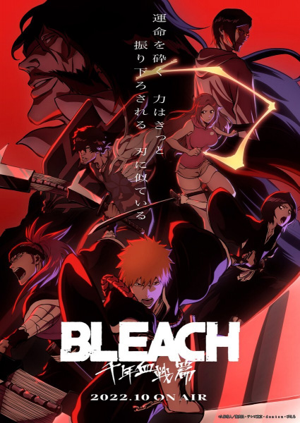

"Готей 13" под угрозой полного уничтожения.
Старый могущественный враг всех шинигами вновь объявляет войну Обществу душ.
И это не кто иной, как император Ванденрейха, зовущий себя Яхве.
Он хочет убить Короля душ, захватить трон и на руинах построить свою новую
империю. Так пламя тысячелетней кровавой войны разгорается с новой силой
8/10

Дэндзи приходится полностью изменить свою жизнь,
чтобы отработать непомерные долги отца.
Он становится подручным якудзы в нелегком деле уничтожения демонов.
На второй план отошли не только сон и отдых, а и общение с любимой девушкой.
Только дьявольский питомец-помощник Почита вносит немного
разнообразия в череду кровавых будней
9,6/10

Шигэо Кагэяма вроде бы обычный японский школьник — стеснительный,
старающийся не привлекать внимания, не блещущий умом,
красотой или чувством юмора. Но! У этого восьмиклассника
есть экстрасенсорные способности. С детства он
взглядом гнет ложки и передвигает предметы.
Моб, или Шигэо Кагэяма – один из борцов с нечистью
9,5/10

Над миром нависла страшная угроза! Шпиону «Сумраку» предстоит выполнить
сложнейшую миссию в своей карьере… стать примерным семьянином.
Под видом любящего мужа и отца он должен проникнуть в элитную школу и сблизиться
с верхами мира политики. На первый взгляд прикрытие вышло великолепное.
Но это только на первый взгляд. Его жена - наёмный убийца, а дочь телепат!
8/10